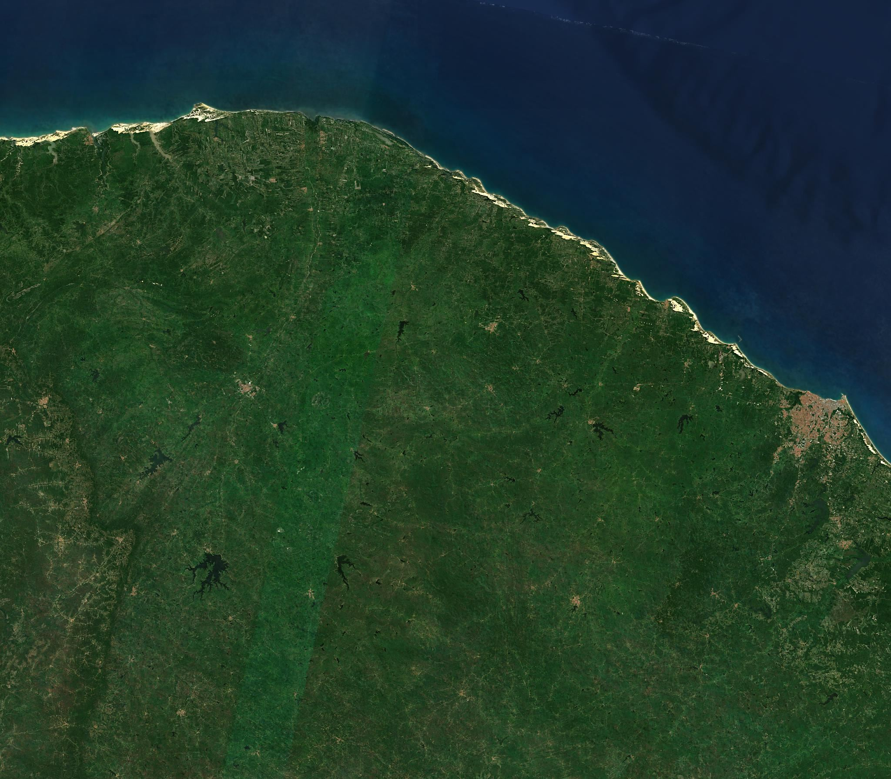
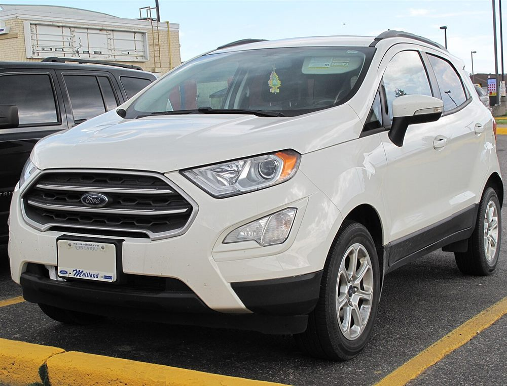

Carro não entra em Jeri
Não há circulação de carros na vila. O carro fica num estacionamento na entrada (lado de Jijoca) e o último trecho é de jardineira ou 4x4 até a pousada.
Fonte: Viaje na Viagem
12 dias de EcoSport branco pela CE-085, de Fortaleza até Jericoacoara, parando em 10 praias.

Posições aproximadas. Arraste para mover o mapa e use + e − para aproximar.
Toque em cada cidade para ver o que fazer, onde comer e as melhores praias. Divisão de noites é sugestão; km aproximados.

O EcoSport desta versão tem tração só na frente (4x2). Ele vai bem no asfalto da CE-085, mas deve ficar longe das praias e dunas de areia fofa. Nesses trechos, a ideia é contratar buggy ou jardineira.
Não há circulação de carros na vila. O carro fica num estacionamento na entrada (lado de Jijoca) e o último trecho é de jardineira ou 4x4 até a pousada.
Fonte: Viaje na Viagem
A TTS de Jijoca de Jericoacoara custava R$ 41,50 por pessoa, válida por 10 dias (valor de 2025). Dá para pagar antes, online, ou na entrada da vila. Confira o valor perto da viagem.
Fonte: Diário do Nordeste
Fevereiro a maio é a quadra chuvosa do Ceará. As lagoas ficam cheias e bonitas, e o vento é mais fraco que no segundo semestre, que é a alta temporada de kite.